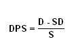

The the sum of declared dividends for every ordinary share issued. Dividend per share (DPS) is the total dividends paid out over an entire year (including interim dividends but not including special dividends) divided by the number of outstanding ordinary shares issued.
DPS can be calculated by using the following formula:  D - Sum of dividends over a period (usually 1 year) SD - Special, one time dividends S - Shares outstanding for the period
Dividends per share are usually easily found on quote pages as the dividend paid in the most recent quarter which is then used to calculate the dividend yield. Dividends over the entire year (not including any special dividends) must be added together for a proper calculation of DPS, including interim dividends. Special dividends are dividends which are only expected to be issued once so are not included. The total number of ordinary shares outstanding is sometimes calculated using the weighted average over the reporting period.
For example: ABC company paid a total of $237,000 in dividends over the last year of which there was a special one time dividend totalling $59,250. ABC has 2 million shares outstanding so its DPS would be ($237,000-$59,250)/2,000,000 = $0.0889 per share.
Dividends are a form of profit distribution to the shareholder. Having a growing dividend per share can be a sign that the company's management believes that the growth can be sustained.
{kind=link}